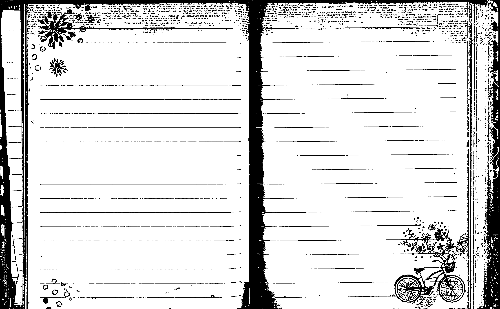
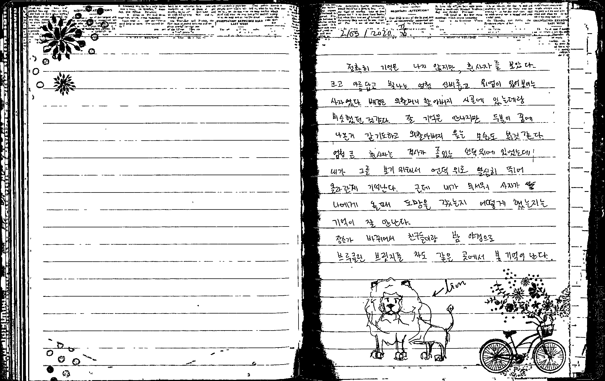
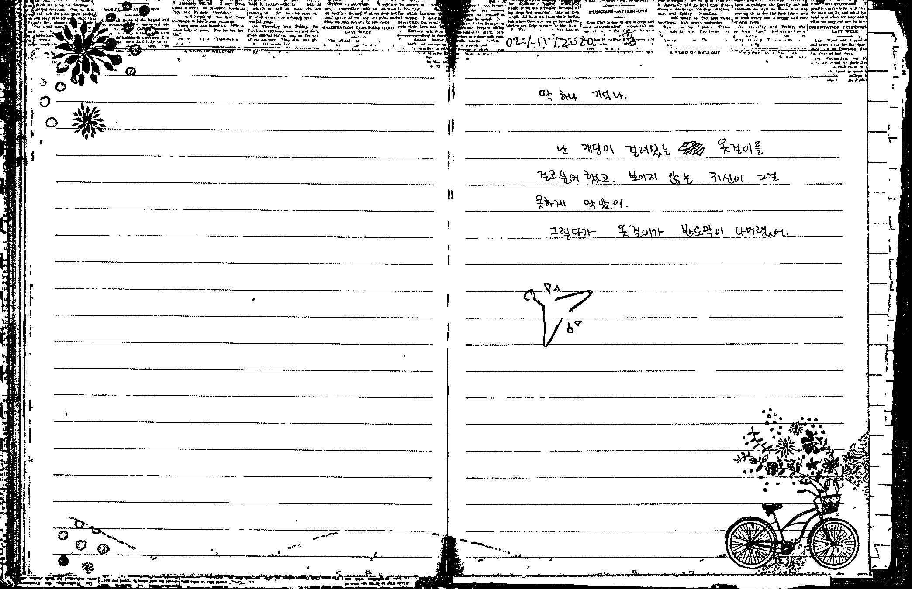
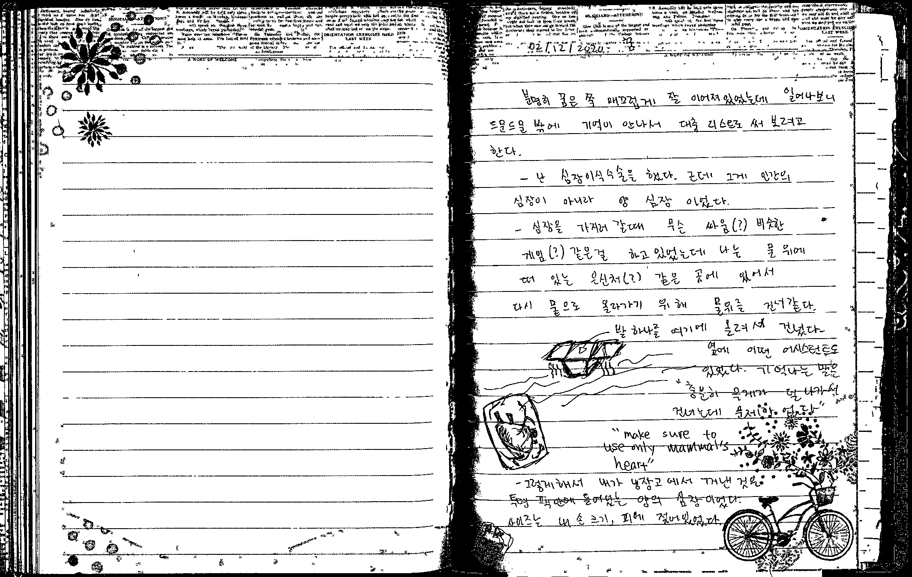

1/31/2020 꿈
박물관 같은 곳에 티켓을 보여주면서 공짜로 친구들이랑 들어갔는데 어느순간
보니 나 혼자. 계단을 내려갔을때만해도 다 같이 있었는데... 혼자서
박물관같은 곳에 있을때 작은 수족관(?) 그 예전에 롯데 마트가면 물고기들이
들어있는데 그런 크기의 수족관들이 빼애애곡히 엄청 맣이 있었는데 그 안에
여러가지 물고기 때들이 들어가 있었다. 그러다가 한 물고기는 혼자 들어가
있는데 엄청 크고 못생겼다. 그 애는 꼭대기쯤에 위치한 그들중 가장 큰
수족관이었다. 그 애는 수족관 바닦을 왔다 갔다 하는데 그럴때마다 머리를
부딪혔다. 한, 삼일인가 일주일 뒤에 다시 가보니까 수족관 물이 관리가 안돼서
엄청 뿌얘져 있었다. 바닦은 물고기 똥으로 가득(?)까진 아니고 좀 많이
있었다. 물고기들은 죽어있는거 같진 않았고 계속 움직이고 있었다.

2/05/2020 꿈
정확히 기억은 나지 않지만, 흰사자를 보았다. 크고 아름답고 빛나는 엄청
신비롭고 위엄이 있어보이는 사자였다. 배경은 외할머니 외할아버지 시골에
있는데랑 비슷했던것 같다. 잘 기억은 안나지만 두분이 꿈에 나온거 같기도
하고 외할아버지 웃는 모습도 본것 같다. 엄청 큰 흰사자는 경사가 좀 있는
언덕 위에 있었는데 내가 그를 보기위해서 언덕위로 열심히뛰어 올라간게
기억난다. 근데 내가 무서워서 사자가 나에게 올때 도망을 갔는지 어떻게
했는지는 기억이 잘 안난다. 장소가 바뀌어서 친구들이랑 밤 야경으로 브루클린
브릿지를 차도 같은 곳에서 본 기억이 난다.

2/11/2020 꿈
딱 하나 기억나.
난 패딩이 걸려있는 옷걸이를 걸고싶어 했고. 보이지 않는 귀신이 그걸 못하게
막았어. 그렇다가 옷걸이가 반토막이 나버렸어.

2/12/2020 꿈
분명히 꿈은 쭉 매끄럽게 잘 이엉져있었는ㄴ데 일어나보니 드문드문밖에 기억이
안나서 대충 리스트로 써 보려고 한다.
-
난 심장이식수술을 했다. 근데 그게 인간의 심장이 아니라 양 심장 이었다
-
심장을 가지러 갈때 무슨 싸움 비슷한 게임 같은걸 하고 있었는데 나는 물
위에 떠 있는 은신처 같은 곳에 있어서 다시 붙으로 올라가기 위해 물위를
건너같다.
-
발 하나를 기계에 올려서 건넜다. 옆에는 어떤 어시스턴트도 있었다.
-
기억나는 말은 "충분히 무게가 덜 나가서 건너는데 문제가 없다" "make
sure to use only mammal's heart" "I got it don't worry"
-
그렇게해서 내가 냉장고에서 꺼낸것은 투명한 팩 안에 들어있는 양의
심장이었다. 사이즈는 내 손 크기. 피에 젖어있었다.
-
심장이식을 할때 피도 필요해서 엄지 손가락 위치에 링겔 같은걸 넣어서
수혈을 했다. 근데 중간에 몇번 빠져서 아팠다.
-
내려가려고 하는데 결국 못내려가고 높은 곳에서 소리질러 우리팀을
응원했어.
-
결국 우린 이겼지만 아빠가 뭐라해서 분위기는 안좋았어
??/??/2020
날짜는 기억이 안난다.
근데 꿈속에 경훈이가 나왔는데, 난 얘가 어떤 여자랑 놓았다고 생각하고
나한테 거짓말을 했다고 믿어버렸다. 그래서 엄청 화를 냈는데 알고보니
그 아이는 남자애였다고 했다. 경훈이가 엄청 삐지고 내가 미안해 했던게 기억이 난다.
??/??/2019
꿈에서 아기가 눈 코 입, 몸에 있는 모든 구멍으로 토나 똥 같을 것을
내뿜으면서 죽는걸 보았다. 무서웠다. 이상하고.
5/25/2016
할아버지께서 꿈에 나오셨다. 2018년 9월 초에도 꿈에 나오셨다.
마라톤 대회, 미국 친구들 나오고, 다 같이 달린다. 난 아직 꿈에서 숨니 차지는 않았구..
rachel kim 이랑 대화도 하고 이준범도 보고 앤드류 슨카우스키도 보고...
근데 어느 순간 건물 같은 곳 계단을 올라가는데 밖에 노울이랑 한 구름이 엄청 빨개.
이쁜 빨강이야. 근데 그 외에 다른건 흑백. 그것도 잠시야. 이준범인지ㅜ누군가의 뒤에 작은
아가가 엎여 있어. 너무 귀여워 ㅎㅎ
뱀한테 바다에서 물렸어, 아니 안그래도 물릴거 같아서 사람들 뒤에 숨어있던곤데 물렸어 ㅠ.
쓰나미 같은거 땜에 사람들 대피, 엘리베이터 안에서 잘생긴 애랑 마주치는데 친해져서
같이 놀게됨. 택시에서 흑인 아저씨랑 아마존 얘기를 하는데 내가 나도 아마존을 가봤다고 함
물속에 들어가면 원기가 회복 된다면서 신처럼 엄청 커지고 물로 세상을 꽉 채운듯한 느낌.
엄청 예쁘다. 사람들이 저주를 받으면 얼굴이 사라진다. 전염병 같이.